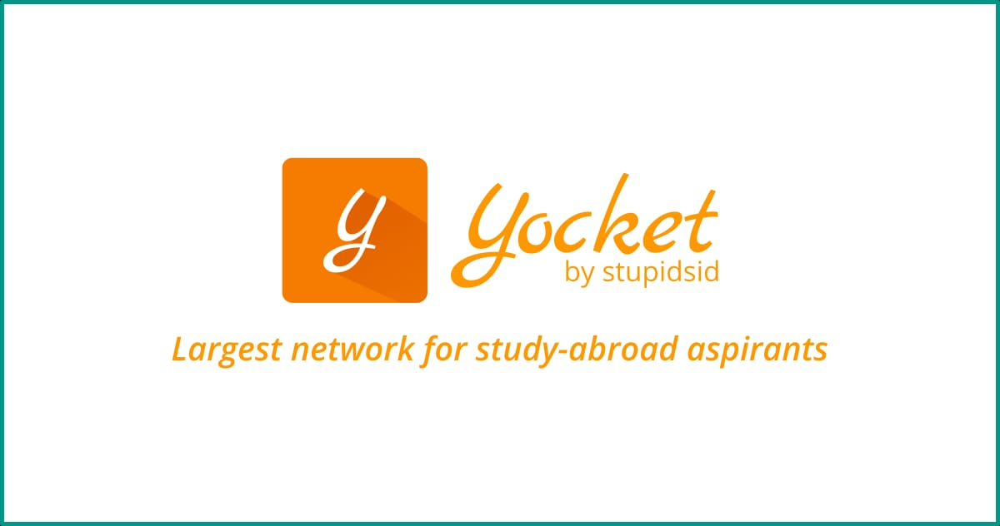

Founded in 2015, Yocket is today the largest community-driven online platform for international education. It helps students aspiring to study abroad by connecting them to the best universities over the world. Till date, they have helped nearly 400,000 students plan their international education. Yocket uses data science and ML combined with the power of user community to accurately match students to more than 50,000 courses and specialisations from 1200 international universities. Further there's access to application deadlines and tools to track universities’ decisions, preparing for tests, or connecting with alumni and university reps.
